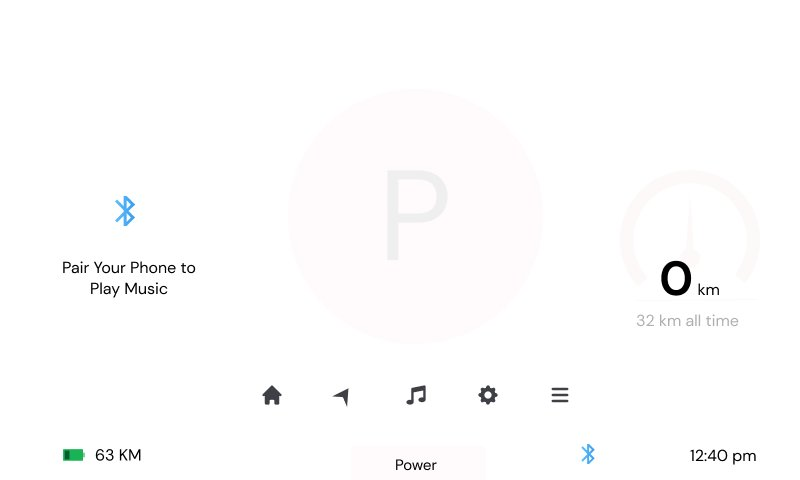
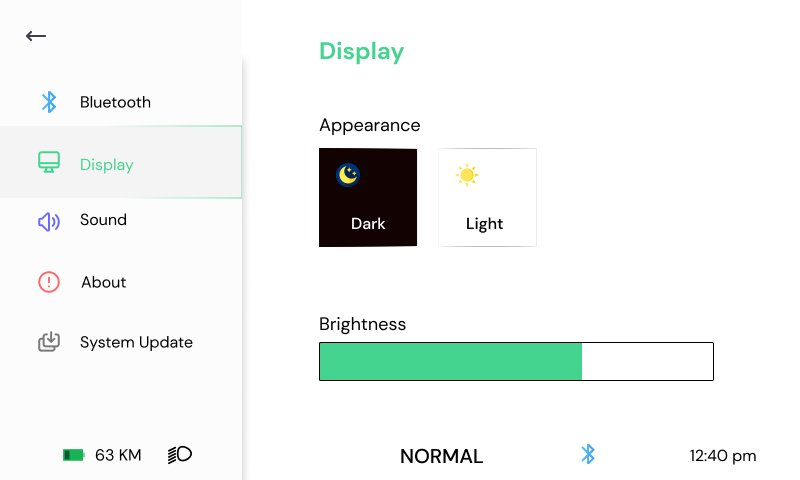
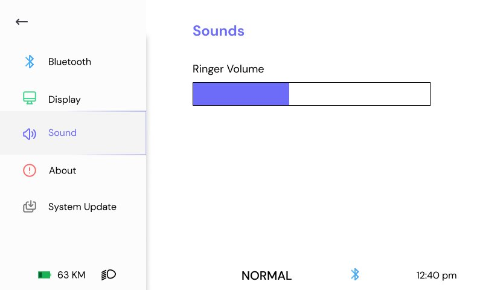
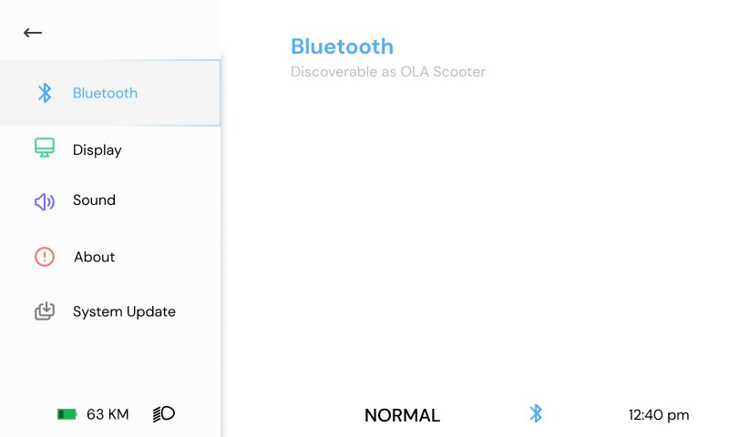
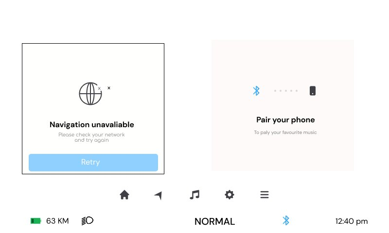
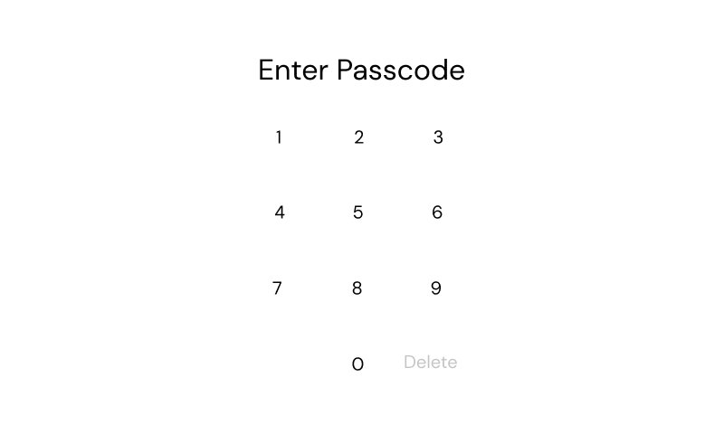

Ola: read at 60 km/h.
A scooter instrument cluster built for the half-second glance. Speed and range first; everything else recedes. Motion as a safety feature, not a flourish.

Designed for the glance, not the stare.
A rider can spare about half a second. In that window the cluster has to answer two things, how fast and how far, and let everything else fall away.
So the hierarchy is strict. Speed and range dominate, the smaller controls step back, and nothing fights for your eye at the moment it matters. Being readable is the whole brief.

Two modes, one visual language. The cluster changes what it says without changing how it reads.
Depth without the noise.
Settings, sound, display, connectivity. The cluster carries real depth, but it stays out of the way until you ask for it. Every secondary screen uses the same calm hierarchy.
Modals and passcode entry are built so you can use them without losing track of where you are.




The needle eases into place instead of snapping. A glance reads as calm, not alarm. The motion is a safety decision, tuned so your eye trusts it right away.
